AXSYNC
Custom reports from any Odoo model, its related records, or a SQL query. Published with their own menu, list, pivot and graph, in minutes and without development.
Odoo 16 Odoo 17 Odoo 18 Odoo 19 Odoo 20
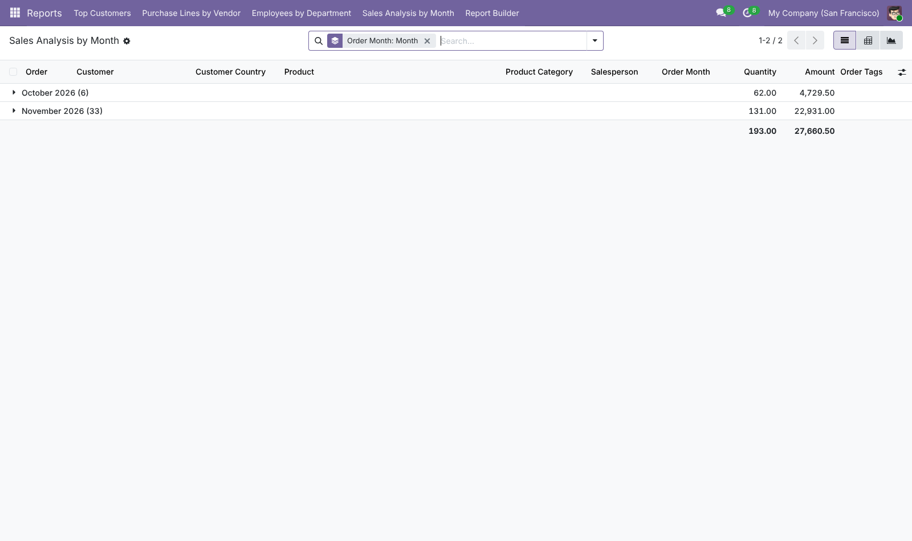
The data behind most business questions is already in Odoo. It is just spread across orders, lines, products, contacts and employees. Report Builder Pro lets you put it on one screen. Choose a model, follow its relations with simple pickers, and publish. The report gets its own menu and works like any Odoo screen: search, filter, group, pivot, chart, export. Rows are computed live by the database, so they are always current and stay fast on large volumes.
Follow many2one, one2many and many2many relations up to five levels. Customer country, product category, order tags.
Administrators can publish a read query. Columns are detected automatically, ids become links, placeholders handle companies and languages.
Totals, default grouping, sort order, pivot rows and columns, bar, line or pie charts, defined once in the report.
Put each report under any menu and choose who can open it. Record rules of the source model apply by default.
Multiply, divide, round, change sign, shift dates, or turn dates into weeks, months, quarters and years.
Email any report as an Excel file every day, week or month. Move reports between databases with export and import.
Pick the model, filter the records, add columns with field pickers and choose what each column does: search, group by, totals, pivot and graph roles.
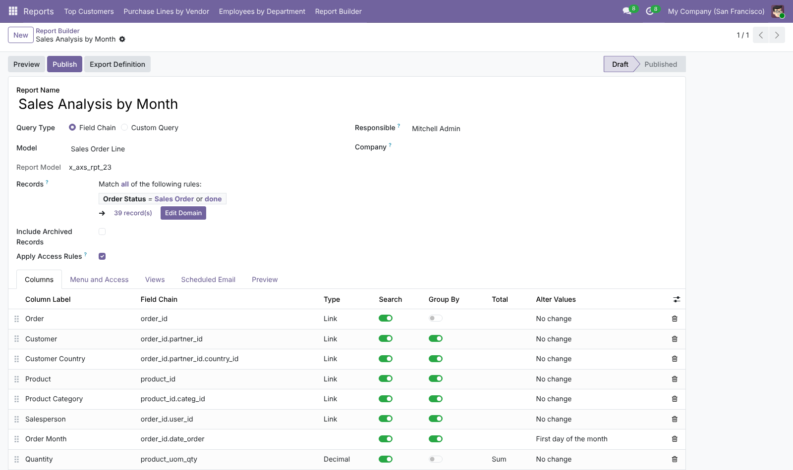
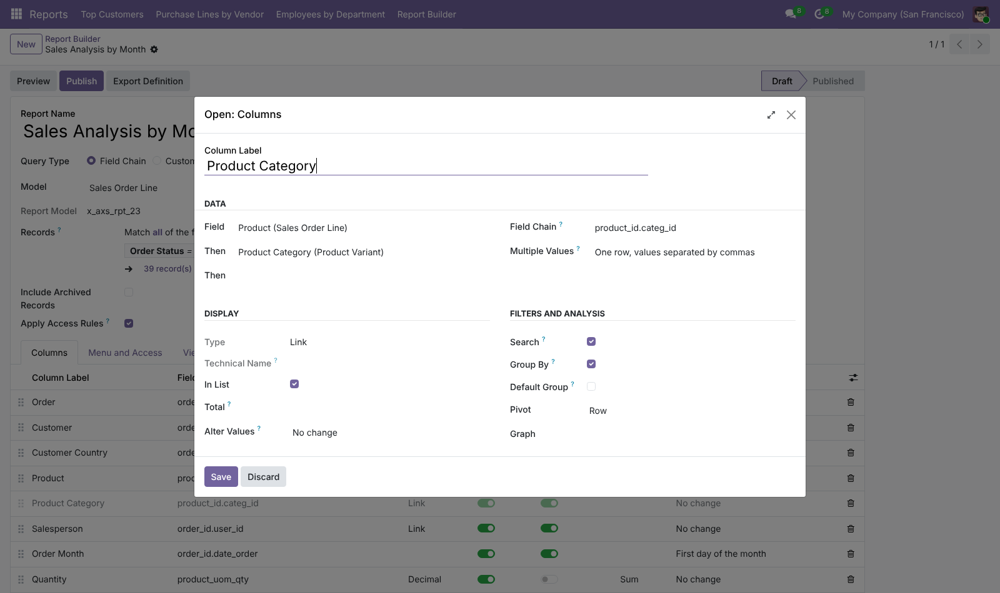
See the first rows and the total count, computed with your access rights, without leaving the form.
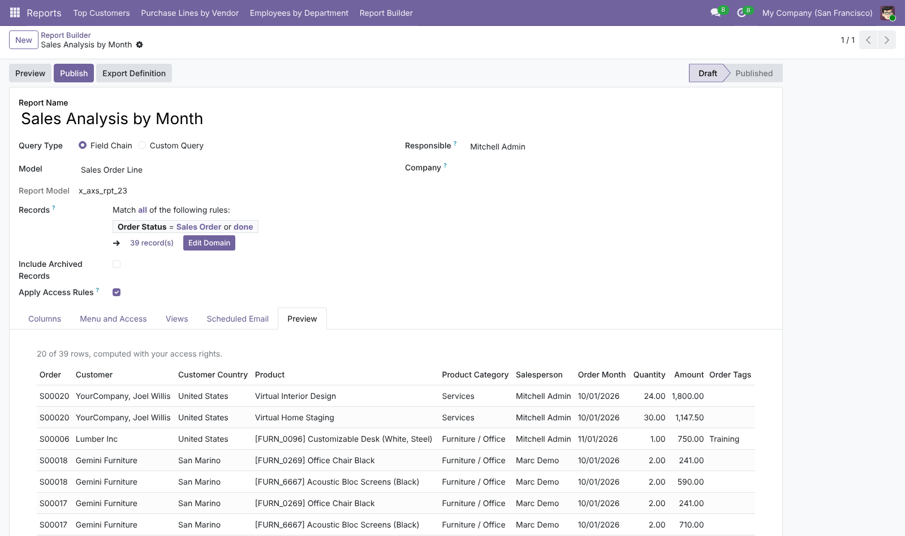
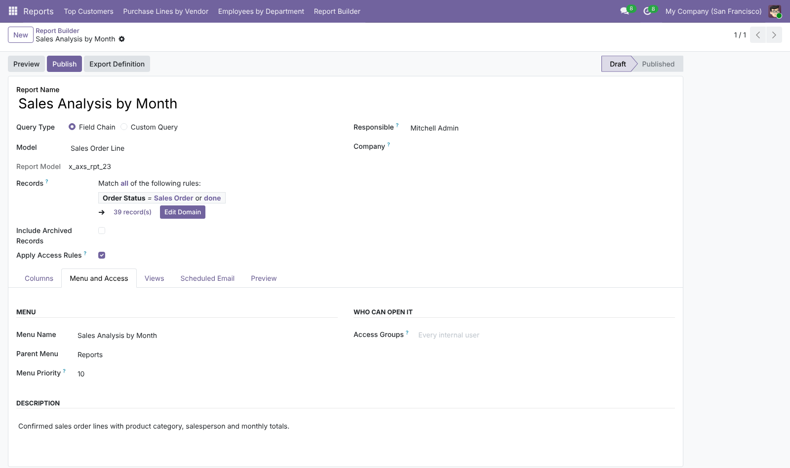
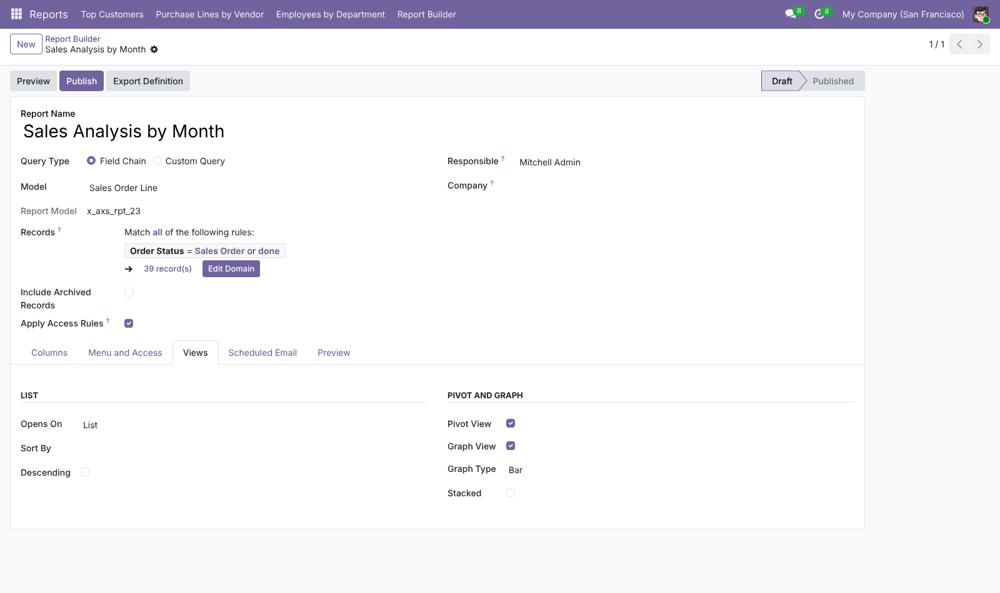
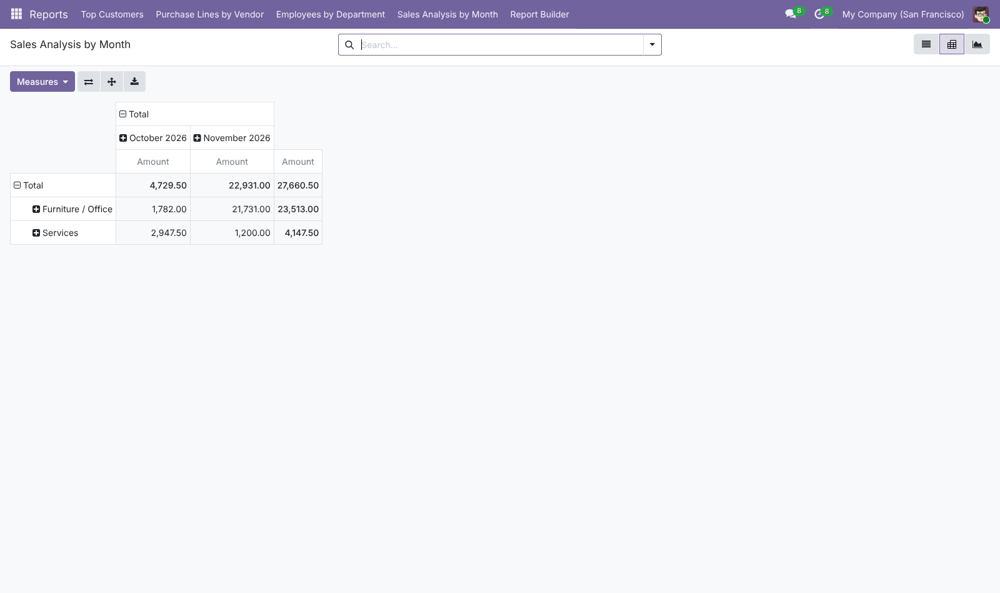
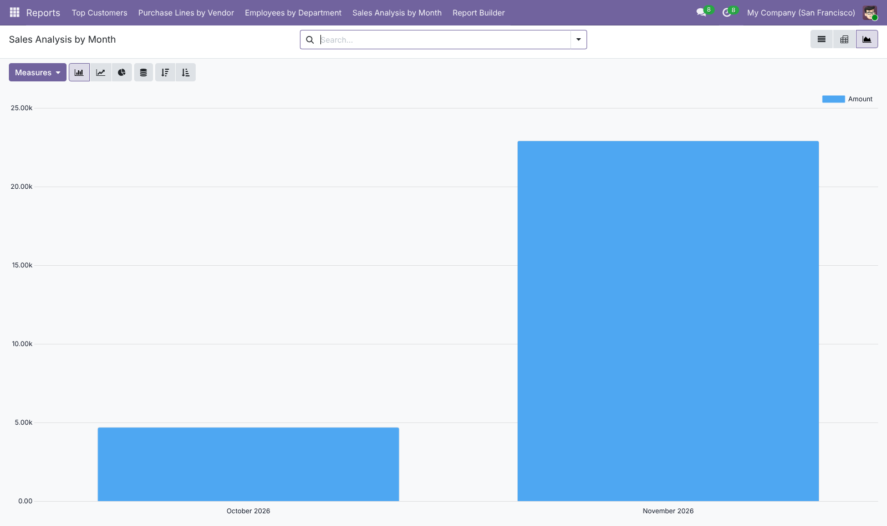
Write a SELECT, run it, adjust the detected columns and publish. Only administrators can create SQL reports, and only read queries are accepted.
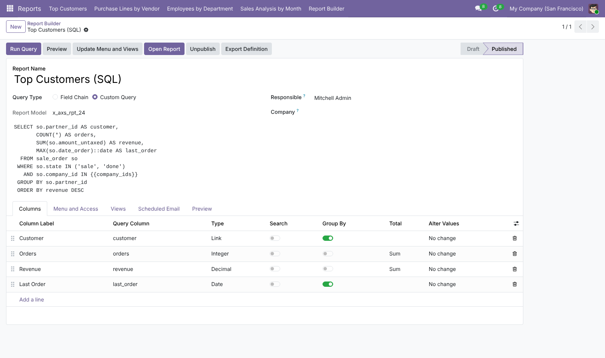
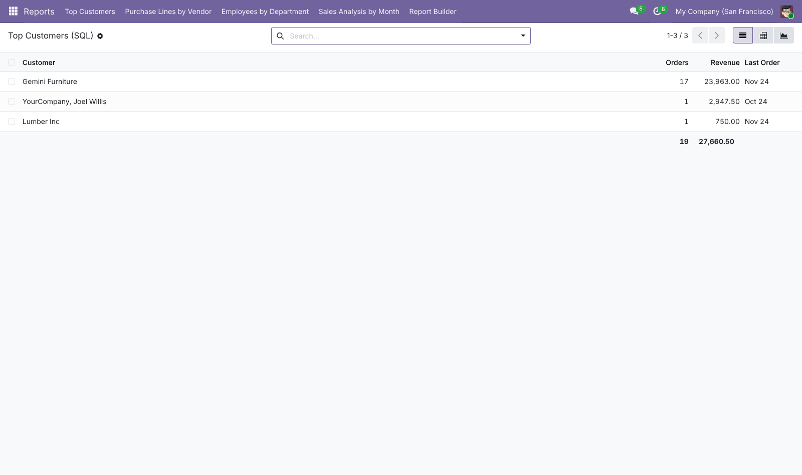
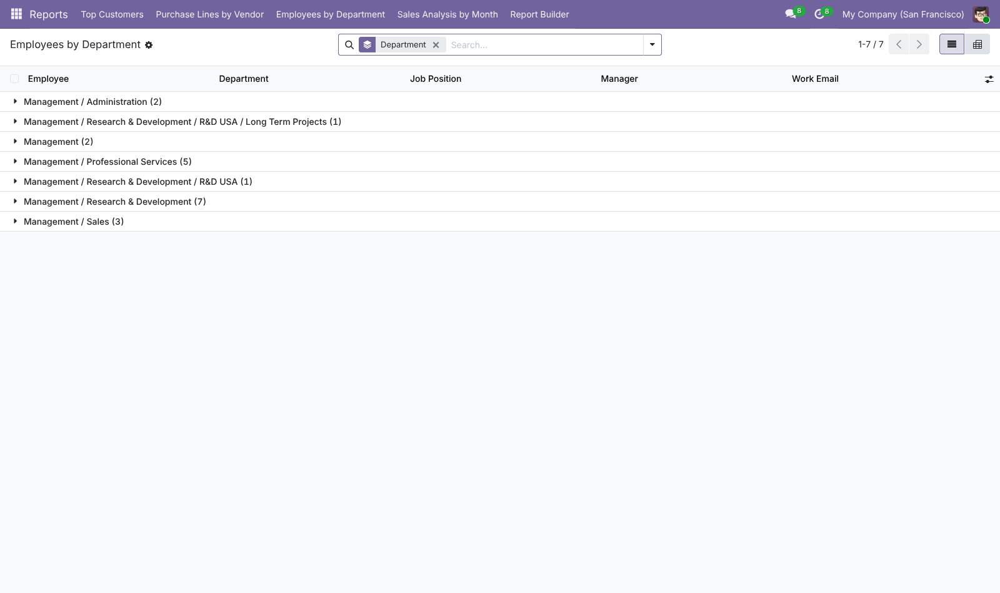
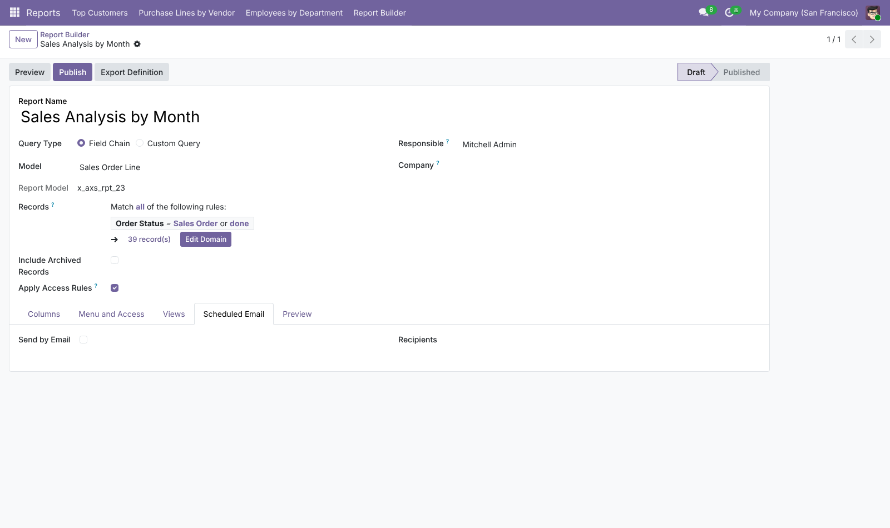
Install Report Builder Pro from the Apps menu. A Reports app appears with the Report Builder menu. Give the Report Builder Manager role to the people who design reports, create a report, preview it and publish it. Odoo reloads and opens your new report under its menu.
Is data copied? No. Every report is a live SQL view of your existing data.
Do users see records they should not? No by default. Record rules of the source model apply, and each report has its own access groups.
Can managers write SQL? No. Custom queries are limited to administrators and to read statements.
Can I move reports to another database? Yes, with Export Definition and Import Definitions.
What about other apps and custom models? Any model with stored fields can be reported on.
AXSync · hunain@axsync.com · axsync.com
Free bug fixes for supported versions. Report design and customizations quoted on request.